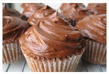
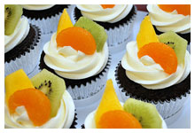
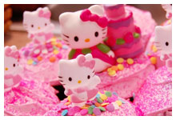

De chocolate y dulce de leche
Con mouse de chocolate
De frambuesa y coco
Tropicales
Personajes de Toy Story
Hello Kitty
Los cupcakes dejaron de ser ‘tendencia’ para convertirse en moda. Desde NY arribaron directo en Baires, y lo que al principio era un ‘cup… ¿qué?’, hoy es un boom. Pero hay que saber buscar y encontrar no sólo lo más rico, sino lo que invita a una verdadera experiencia dulce.
Con una gran variedad de toppings y originales sabores, en esta tienda de delicias nada está librado al azar. Deliciosos productos y un ambiente cuidado en cada uno de sus detalles, permiten a su público disfrutar con todos los sentidos.
Se puede degustar en la barra, llevar a casa en unas cajitas divinas o pedir por delivery. No hay excusa para probarlos… Y créanme que si pasan por la puerta, es imposible no entrar y llevarse uno de “souvenir”...
Sweet Cupcakes - 2012 - contacto@sweetcupcakes.com